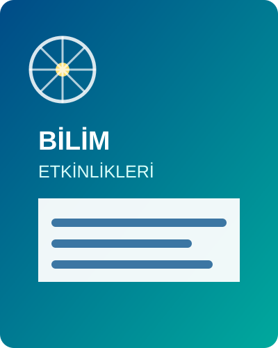

Yaklaşan Etkinlikler
Bu demo, erişilebilirlik tercih araçlarının gerçek bir içerik sayfasındaki davranışlarını denemek için hazırlanmıştır. Sol alt köşedeki erişilebilirlik düğmesini klavye veya fare ile açabilirsiniz.
Üsküdar’da Bilimle Buluşuyoruz: Bilim Şenliği
Bilimsel merakı destekleyen atölyeler, deneyler ve söyleşiler her yaştan ziyaretçiye açık olacaktır.
Etkinlik programı